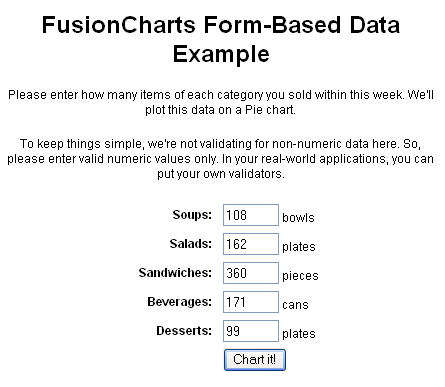
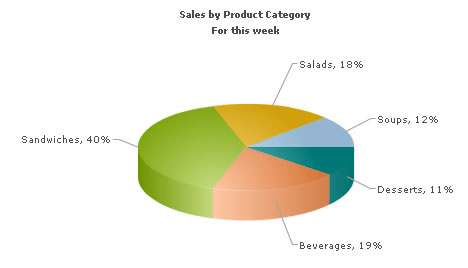

| Charting Data from Forms |
In this section, we will show you how to use FusionCharts XT with Ruby to plot data collected from form. We will build a simple restaurant sales example, where the user will enter the items sold by a restaurant in a given week. This data will be submitted in a form to the server. We will acquire this data and plot it on a chart. For the sake of simplicity, we will not process anything on this data. However, your real life applications might process data before presenting it on the chart. Before you go further with this page, we recommend you to please see the previous section, Basic Examples, as we start off from concepts explained in that page.
All code discussed here is present in |
| Building the Form |
|
The form is contained in default.html.erb and looks as under:  To display this form, we have defined an action default in the controller, form_based_controller.rb. There is no code in this action. It just renders the view (the form). Let us see the view. <html xmlns="http://www.w3.org/1999/xhtml">
<head>
<meta http-equiv="Content-Type" content="text/html; charset=utf-8" />
<title>FusionCharts XT - Form Based Data Charting Example</title>
<%= stylesheet_link_tag "style" %>
<%= javascript_include_tag "jquery.min" %>
<%= javascript_include_tag "lib" %>
<%= javascript_include_tag "DD_belatedPNG_0.0.8a-min" %>
<!--[if IE 6]>
<script>
/* select the element name, css selector, background etc */
DD_belatedPNG.fix('img');
/* string argument can be any CSS selector */
</script>
<![endif]-->
<style type="text/css">
h2.headline {
font: normal 110%/137.5% "Trebuchet MS", Arial, Helvetica, sans-serif;
padding: 0;
margin: 25px 0 25px 0;
color: #7d7c8b;
text-align: center;
}
p.small {
font: normal 68.75%/150% Verdana, Geneva, sans-serif;
color: #919191;
padding: 0;
margin: 0 auto;
width: 664px;
text-align: center;
}
</style>
<%
#You need to include the following JS files,
#if you intend to embed the chart using JavaScript.
#When you make your own charts, make sure that the path
#to this JS file is correct. Else, you will get JavaScript errors.
%>
<%= javascript_include_tag "FusionCharts" %>
</head>
<body>
<div id="wrapper">
<div id="header">
<div class="back-to-home"><%= link_to 'Back to home', :controller=>'fusioncharts/index'%></div>
<div class="logo">
<a href="http://www.fusioncharts.com"><%= image_tag "fusionchartsv3.2-logo.png",
:width=>"131", :height=>"75", :alt=>"FusionCharts v3.2 logo" %></a>
</div>
<h1 class="brand-name">FusionCharts</h1>
<h1 class="logo-text">FusionCharts RoR Samples</h1>
</div>
<div class="content-area">
<div id="content-area-inner-main">
<h2 class="headline">FusionCharts Form-Based Data Example</h2>
<div class="gen-chart-render">
<p class='text'>Please enter how many items of each category you
sold within this week. We will plot this data on a Pie chart.</p>
<p class='text'>To keep things simple, we are not validating for
non-numeric data here. So, please enter valid numeric values only. In
your real-world applications, you can put your own validators.</p>
<% form_tag(:action=>'chart') do -%>
<table width='50%' align='center' cellpadding='2' cellspacing='1'
border='0' class='text'>
<tr>
<td width='50%' align='right'><B>Soups:</B> </td>
<td width='50%'><input type='text' size='5' name='Soups'
value='108'> bowls</td>
</tr>
<tr>
<td width='50%' align='right'><B>Salads:</B> </td>
<td width='50%'><input type='text' size='5' name='Salads'
value='162'> plates</td>
</tr>
<tr>
<td width='50%' align='right'><B>Sandwiches:</B> </td>
<td width='50%'><input type='text' size='5' name='Sandwiches'
value='360'> pieces</td>
</tr>
<tr>
<td width='50%' align='right'><B>Beverages:</B> </td>
<td width='50%'><input type='text' size='5' name='Beverages'
value='171'> cans</td>
</tr>
<tr>
<td width='50%' align='right'><B>Desserts:</B> </td>
<td width='50%'><input type='text' size='5' name='Desserts'
value='99'> plates</td>
</tr>
<tr>
<td width='50%' align='right'> </td>
<td width='50%'><input type='submit' value='Chart it!'></td>
</tr>
<table>
<% end -%>
</div>
<div class="clear"></div>
<p> </p>
<p class="small">
<p> </p>-->
</p>
<div class="underline-dull"></div>
</div>
</div>
<div id="footer">
<ul>
<li><%= link_to '« Back to list of examples', :controller=>'fusioncharts/index'%></li>
<li class="pipe">|</li>
<li><a href="/NoChart.html"><span>Unable to see the chart above?</span></a></li>
</ul>
</div>
</div>
</body>
</html>
Here, we have used the form_tag ruby form-helper function to create the form and we have assigned the action "chart" to it. In this example, we have the form text fields hard-coded. In real-world, you will create the form based on some Model and use ruby form-helpers to create the form, the textfields, etc. What happens when you click on Chart It button? |
| Requesting the Data and Creating the Chart |
|
The work of requesting the data from submitted form and creating the chart containing the following code: Controller: Fusioncharts::FormBasedController Action: chart #Data is obtained from the submitted form (present in the request) #In this example, we are directly showing this data back on chart. #In your apps, you can do the required processing and then show the #relevant data only. #The view for this action uses the "common" layout. def chart response.content_type = Mime::HTML # Get the values from the request using params[] @str_soups = params[:Soups] @str_salads = params[:Salads] @str_sandwiches = params[:Sandwiches] @str_beverages = params[:Beverages] @str_desserts = params[:Desserts] #The common layout is used only by this function in controller. render (:layout => "layouts/common") end View: <% @page_title=" FusionCharts - Form Based Data Charting Example " %> <% @page_heading="FusionCharts Form-Based Data Example" %> <% @page_subheading="Restaurant Sales Chart below" %> <p class='text'>Click on any pie slice to see slicing effect. Or, right click on chart and choose "Enable Rotation", and then drag and rotate the chart.</p> <% # The xml is obtained as a string from builder template. str_xml =render :file=>"fusioncharts/form_based/form_based_data", :locals=>{:str_soups => @str_soups, :str_salads => @str_salads,:str_sandwiches => @str_sandwiches, :str_beverages => @str_beverages,:str_desserts => @str_desserts} #Create the chart - Pie 3D Chart with data from str_xml render_chart '/FusionCharts/Pie3D.swf','',str_xml,'Sales', 500, 300, false, false do-%> <% end -%> <a href='javascript:history.go(-1);'>Enter data again</a> The controller action does the following:
The view calls render function and gets the XML from the builder template form_based_data by passing the form data as parameters to it. Then it calls the render_chart() function to create a Pie chart, by passing the XML as parameter. What does the builder do? Let's see. # Builds xml for sales of various product categories # of a Restaurant to be shown in form of a pie-chart. # The values required here are received as parameters # Expected parameters: str_soups,str_salads,str_sandwiches,str_beverages,str_desserts xml = Builder::XmlMarkup.new xml.chart(:caption=>'Sales by Product Category', :subCaption=>'For this week', :showPercentValues=>'1', :pieSliceDepth=>'30', :showBorder=>'1') do xml.set(:label=>'Soups',:value=>str_soups) xml.set(:label=>'Salads',:value=>str_salads) xml.set(:label=>'Sandwiches',:value=>str_sandwiches) xml.set(:label=>'Beverages',:value=>str_beverages) xml.set(:label=>'Desserts',:value=>str_desserts) end The builder builds the xml with outermost tag as the <chart> element. Inside this, it puts the <set> element. The attributes of the set tag are label and value. The values are picked from the parameters received from the view. That's it. Now, when you click the "Chart it" button, this is what you will see:  |